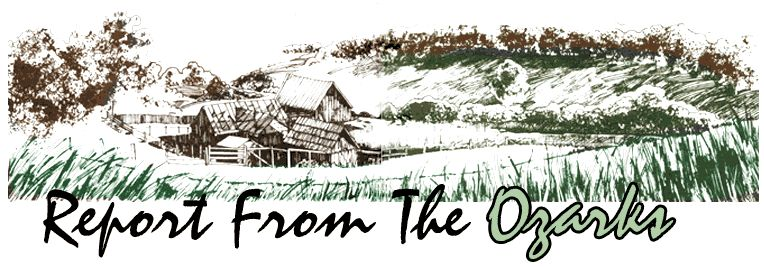

How high is up? At our house, "up" is two crooked miles by road or one-half mile as the crow flies . . . if a crow could fly straight up our mountain. I don't think the wind currents would let him.
The road to our place follows the ridges and the shelving benches the only way it could go. Therefore we have just one route in and out (unless we walk, and walking is hard on shoes and old clothes).
If two drivers meet on the mountain, the one going up has the right of way. The fellow coming down finds an unoccupied space, pulls over and stops. "Unoccupied" means the rocks are small enough to straddle and the trees wide enough apart to miss. In several spots, one bank of the road towers above the auto and on the other drops away to nothing for several feet. Sometimes cars and trucks meet in the most unhandy places and get their noses bumped.
The Ozarks leave the most learned men shamefaced because they can't decide where our mountains begin and end. Some of the poor fellows even call these highlands a plateau . . . which might be truer than one would think from observation. "Our mountains ain't so high, but our valleys shore are deep," goes an old Ozark saying. It does fit. The region couldn't brag of peaks-or even hills-if the creeks and rivers didn't cut with a vengeance for several hundred feet through the silky dirt and soft rocks.
Our valley is bowl-shaped with a flat bottom and a creek running through. Mountains surround us, just high enough to shut out the rest of the world. Almost all our property is valley land and comparatively flat, with one generous edge turned up and attached to the Ozark National Forest. The other side ends up in the river. (Well, the maps call it a river and in winter and spring it's just that . . . but in summer and fall, until the autumn rains start, it's a creek. In the dry season, crossing the stream is simply a matter of putting your feet on the right stones. If you step on a slippery rock and aren't fast enough on your legs to keep your balance, your backside gets wet along with your dignity. When the rains come, you gotta have a boat.)
We live 18 miles from any town, 60 miles from a city with an assortment of doctors, 15 miles from a store or gasoline station (one and the same) and 13 miles from the closest paved road. Those last 13 miles are over the roughest, rockiest, dirtiest, narrowest car track in the state of Arkansas . . . and brother, that's saying a lot, because Arkansas is not well known for good secondary routes. It's five miles to the nearest neighbor, who also has the nearest telephone.
Electricity? Yep, we do have that. I even cook with it. When I get a place built to put one, though, I'll buy a wood cookstove to use in the fall, winter and spring. Most of the people on the mountain (especially those who were raised here) have wood ranges to fix meals on, side by side with all sorts of electrical appliances. I don't think they trust the pow er company, and maybe I shouldn't either. Meanwhile, that's our only utility bill.
We have several good wells on our place, but they aren't being used. We take cool, clear, soft, deliciously sweet water from a spring situated on the mountain above us. . . and have all the conveniences of town at no cost, because our gravity flow system gives us pressure equivalent to or better than that in the city.
When a woman is on the shady side of 40, happiness is the day an automatic washing machine and a flush pot are installed in the house. At my age I get no thrill from swatting at crawling, flying and jumping insects in an outside johnnie (I'd forgotten how plentiful the critters were). And I'm too old and slow to wash clothes with lye soap on a scrubboard. (Don't worry about the halfcup of detergent I use for each load of laundry . . . it runs outside in the yard and makes the grass tall and happy.)
Now a word to people who are moving to the Ozarks to live: Please, have enough money on hand to house and feed yourselves for two years. It takes that long for folks to accept you and for you to adjust to their customs and their ways of thinking (they are different). Even then, you'll probably have to create your own job if you want to be paid more than a bare living wage.
Two dollars hourly is almost top pay in this section of the Ozarks (as of one year ago.-MOTHER). I know a man who owns a chain saw and cuts firewood for $1.50 an hour, which is also the rate for picking tomatoes, squash and other vegetables. Another acquaintance of mine, who works for a gas company, got a raise to $3.00 an hour and was very happy about it . . . even though he'd been employed by that same outfit for 20 years.
You should also know that education is virtually no help in obtaining a job . . . in fact, it may be a handicap. The tradespeople in this area can't or won't pay the higher wages advanced schooling is supposed to bring. Those college-trained men who still live here either teach school or own their businesses. Most local young men go elsewhere to make a living and come home to retire. So it goes . . . .
About buying property: When we moved here in August 1971, the land on the mountain was selling for $55.00 an acre. Since then the tract has changed hands and now sells for $200 an acre, cut into 10-acre blocks. ( Again, that's as of one year ago. -MOTHER.)
If you do buy acreage here and your homestead road crosses someone else's land on the way to the public highway, be sure to buy that strip or at least to negotiate a written agreement giving you use of the right of way. The laws of Arkansas guarantee you access, but the owner of the intervening property can cause trouble.
One man, for instance, bought 400 beautiful, fertile acres overlooking a river. He built a dream home-the works-on the place and erected several huge tin barns for his cattle. Then, at his own expense, he put in two miles of all-weather road. Wonderful . . . but the catch is that he ran most of that route across another fellow's land.
OK, our ambitious landowner installs a cattle guard across his road at the property line . . . and suddenly he finds a gate-locked-in the middle of that barrier. Oh, he has a key all right, but he has to unlock and lock the gate every single time he goes in or out. Besides that and other problems, he discovers-in the worst of weather-a truck parked, without driver or keys, smack in the center of his lovely road . . . so to get home he has to turn off the surface, drive around the blockade and maybe get stuck.
Harassment? You bet . . . but no lawyer in this county will take the man's case, and if he won his suit he would have won nothing. Now he's trying to sell his dream place, as his attorneys have advised. I wouldn't touch it with a ten-foot pole at any price. I prefer my shack in the valley to his mountaintop mansion and his problems. I'm not judging who's right or wrong, I'm merely stating the facts . . . and warning you to buy a right of way to the public road.
Generally, though, there's a healthy, amiable atmosphere about the Ozarks. The area has its good folks and its bad folks, but mostly they're just decent people trying to live a decent life.
Our own greatest ambition is to be able to live to the fullest and suck the marrow to the bone on the amount of money the government allots for two people's existence (without paying income tax). Within that limit, we want to be well fed, comfortably clothed, under shelter, busy and contented. I see no reason why this can't be accomplished here and now.
|
 |
|
|